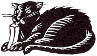
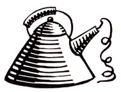
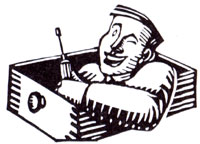

-I LLUSTRATIONS BY ALISON SEIFFER -
Through the years we've all discovered a few practical, time-tested solutions to the frustrating little problems of everyday life. Why not share your best ideas with the rest of MOTHER's readers? Send your suggestions to Country Lore, Mother Earth News P.O. Box 70, Hendersonville, NC 28793. A one year subscription-or a one-year extension of an existing subscription-will be sent to each contributor whose tip is printed in this column.-MOTHER
As a part-time watch and clock repairman, I've seen my share of wind-up alarm clocks that are no longer dependable. Most of them I can restore without even removing the backs. I simply aim a few squirts of a lubricant like WD-40 into the openings behind the regulator and the wind-up keys, shake and rotate the clock to distribute the spray evenly, and wipe off any excess. I've been using this method for two years, and nearly all the clocks I've tested are still keeping accurate time.-Howie I Gruen, Beaumont, California
Do all cat owners know this secret to eliminating fur balls? Just put some butter on your longhaired pet's front paws about once a month. The cat will lick its paws clean, thus coating its stomach and preventing the formation of those bothersome clumps of hair.
-Patricia Carrick, Ridgetown, Ontario
For times when you need to siphon gas from your car-perhaps to help someone stranded with an empty tank-I have a system that works better than sucking on a hose and ending up with a mouthful of gasoline. I use two hoses, one short and one long. I take the longer one, insert it in the tank, and shove it to the bottom (I can tell it's there by blowing on the hose and listening for a bub bling sound). Then I put the short hose into the top of the tank and wrap both hoses with a rag to make the tank airtight. After putting the free end of the long hose into a container, I blow on the short hose. In a little while the pressure builds up in the tank and forces the gasoline out.- Steve Pocus, Springville, Alabama
Potpourri
I have an old teapot in which I keep a ball of string, so it won't get tangled or dirty. I pull the string's end through the spout as needed, and have tied a small pair of scissors to the lid's handle .... I save and dry orange and lemon peels and use them to kindle a fire .... I remove stubborn perspiration stains from washable shirts by soaking the garments in a quart of water to which I've added a handful of salt .... And I keep my fingers safe when hammering by holding the nails steady between the teeth of a pocket comb.
- Sandy Ruth, Loveland, Colorado
When I was moving from one home to another, a lighted lamp was the last thing I packed up, as I needed it to see. When I was ready to pack it, the bulb was too hot to touch, much less be put among paper-wrapped possessions. I took a folded length of tissue paper and rubbed it all over the bulb. The heat was quickly absorbed, and I could remove and pack the bulb without burning my fingers or endangering my belongings.
- Steven F. Wavra, Dannemora, New York
Free Laundry Service
Here in Minnesota we love our woolen blankets . . . especially the soft, decorative ones with the colorful stripes. But these lightercolored covers need cleaning at times, and when we washed ours, even after following the recommended laundering instructions, they didn't have the original resilient feel we came to be so comfortable with. A winter snowstorm gave us the opportunity to try a different cleaning method altogether: We hung the blankets on our clothesline during the blizzard, and each came out beautifully clean, with the spring and feel of a new blanket.
- Ed Everts, Battle Lake, Minnesota
I've solved the problem of how to remove a shattered light bulb from the socket. Most people use pliers, but this tool tends to break more glass, and can be dangerous if you're not sure the electric power is off: I use a large cork that I wedge into the base of the bulb. A few twists and the base will be free. Another possibility, though not as safe, is to insert a new light bulb into the base of the broken one and unscrew it that way.
-Fred Pellerito, Rolla, Missouri
Do most readers know that when they have a loose knob on a drawer or cupboard, they shouldn't try to tighten it by turning the knob? If they do this often, the offending knob will eventually chew a hole in the face of the drawer or door. The better way is to hold the knob still while tightening the screw from the inside.
- Bob Grove, Portland, Oregon
Sometimes our smoke detector signals us with a deafening screech when the only problem is cooking fumes. After several episodes of racing about in a panic opening windows and doors in a futile effort to stifle the noise, I found a better way. I just stand very close and blow on the housing, as if I were blowing out a candle, and the alarm quiets in about five seconds. If your detector is in a difficult-to-reach spot, you can fan it with a piece of cardboard.
-Daryljunk, Durham, North Carolina
We have a canister vacuum, the kind you pull around as you clean with the wand and beater bar. With all that tugging on it, the hose started to rupture right next to the connecting ring on the canister. I found that parts cost $35 (the hose is sold only as part of a replacement unit), and I tried various types of tape with poor results. Then I found the solution: the 1 1/2-inch tape athletes use to support their ankles and wrists. It makes a sturdy, longlasting repair, and the color blends well with our off-white tank. An even better idea would to be to reinforce the hose before a split can,occur.
- Alvin G. McCollum, Washington, North Carolina
It's so annoying to lose the end of a roll of tape-masking, adhesive, transparent, or other-and have to scratch and scrabble to pick it loose. I avoid this with those little plastic clips that fasten see-through bags of bread and buns. I keep the end of each roll stuck to a clip whenever the tape is not in use.
- Richard A. Sipe, Winchester, Indiana
Paintbrushes will stay softer from one job to the next if, after cleaning them in the usual fashion, you wash them with hand or dish soap, shake them well, and store them hanging up.
-Garry Morris, Sherman, Texas
The cooling system in my car takes a mix of half permanent antifreeze and half water. I maintain the proper blend by having a premixed solution on hand when the radiator needs topping off. Every time I buy one gallon of antifreeze, I pour half of it into an empty one-gallon jug and add a half-gallon of water to each container. These are marked "50/50" and set in a safe place till needed.
- Jay Montgomery, Claremore, Oklahoma.
|
 |
 |
 |